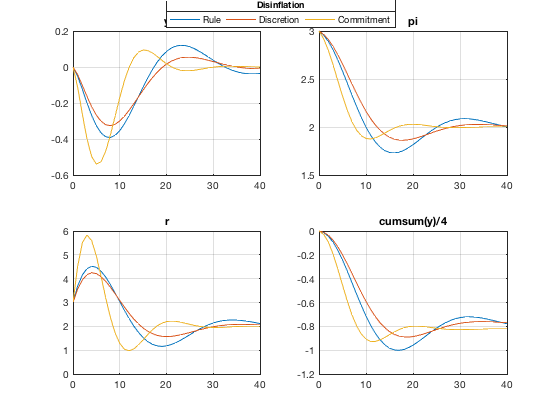
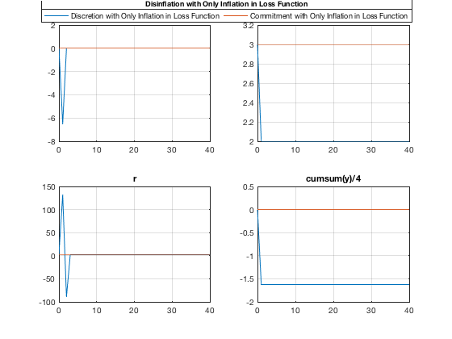

Simulate Disinflation in Optimal Policy Models
Simulate a permanent disinflation in the three types of models (a simple rule, discretionary policy, commitment policy). This experiment shows one of the possible ways how to simulate a permament change in the steady state of a model. It also illustrates the real cost associated with disinflation under different policy assumptions, measured by the sacrifice ratio.
Contents
Clear the Workspace
Clear the workspace, close all graphics figures, clear the command window, and check the IRIS version.
clear close all clc irisrequired 20140319
Load Discretion and Commitment Model Objects
Load all three model objects created and saved previously in read_model.
load MAT/read_models.mat m1 m2 m3
Set Up an Input Database
Disinflation is a permanent change in the steady state of the model. Create first a model object with a higher inflation target, m3high, based on the existing model object m3. Assign the inflation target a higher value, resolve the model and recompute its steady state. Then, create a database with both inflation and nominal interest rates higher by 1%. This database is then used as an input database in the disinflation experiments below.
m3high = m3; m3high.targ = m3high.targ + 1; m3high = solve(m3high); m3high = sstate(m3high); m3.pi m3high.pi m3.r m3high.r d = sstatedb(m3high, 1:40); d d.pi d.r
ans =
2.0000
ans =
3.0000
ans =
2.0000
ans =
3.0000
d =
struct with fields:
Mu_Eq1: [42x1 Series]
Mu_Eq2: [42x1 Series]
y: [42x1 Series]
pi: [42x1 Series]
r: [42x1 Series]
ttrend: [42x1 Series]
e: [41x1 Series]
u: [41x1 Series]
del1: 0.7000
del2: 0.1000
sgm: 0.0500
alp: 0.6500
gam: 0.1000
bet: 0.9000
lmb1: 0.1000
lmb2: 0.1000
targ: 3
mu: 5
rho: 0.8000
std_e: 1
std_u: 1
ans =
Series object: 42-by-1
0: 3
1: 3
2: 3
3: 3
4: 3
5: 3
6: 3
7: 3
8: 3
9: 3
10: 3
11: 3
12: 3
13: 3
14: 3
15: 3
16: 3
17: 3
18: 3
19: 3
20: 3
21: 3
22: 3
23: 3
24: 3
25: 3
26: 3
27: 3
28: 3
29: 3
30: 3
31: 3
32: 3
33: 3
34: 3
35: 3
36: 3
37: 3
38: 3
39: 3
40: 3
41: 3
'Inflation'
user data: empty
ans =
Series object: 42-by-1
0: 3
1: 3
2: 3
3: 3
4: 3
5: 3
6: 3
7: 3
8: 3
9: 3
10: 3
11: 3
12: 3
13: 3
14: 3
15: 3
16: 3
17: 3
18: 3
19: 3
20: 3
21: 3
22: 3
23: 3
24: 3
25: 3
26: 3
27: 3
28: 3
29: 3
30: 3
31: 3
32: 3
33: 3
34: 3
35: 3
36: 3
37: 3
38: 3
39: 3
40: 3
41: 3
'Policy Rate'
user data: empty
Simulate Disinflation
Run simulations starting from a steady state with higher inflation and higher nominal interest rates (database d created above) in models whose steady states see low inflation and low interest rates. Run the simulations in all three models: m1 (a simple policy rule), m2 (optimal discretionary policy), and m3 (optimal commitment policy).
When reporting the results, add one more graph showing the cumulative output gap (divided by 4 to annualize the quarterly simulation results). This is often called the sacrifice ratio, and it is one of the most important numerical characteristics of policy models. The sacrifice ratio is about 0.8 in all of the model versions here.
s1 = simulate(m1, d, 1:40, 'AppendPresample=', true); s2 = simulate(m2, d, 1:40, 'AppendPresample=', true); s3 = simulate(m3, d, 1:40, 'AppendPresample=', true); s = s1 & s2 & s3; dbplot(s, 0:40, {'y', 'pi', 'r', 'cumsum(y)/4'}); le = visual.hlegend( ... 'Top', ... 'Rule', ... 'Discretion', ... 'Commitment' ... ); title(le, 'Disinflation');
Simulate Disinflation with Inflation-Only Objective
Simulate the same disinflation in optimal policy models with zero weights on output and interest rates, lmb1 and lmb2. In these kinds of theoretical models, the central bank can disinflate immediately by creating a sufficient slack in real economy activity in one single period. The sacrifice ratio is though about double the one observed in the original model versions above.
As in simulate_shocks, create two new model objects, m2i and m3i, based on the existing optimal policy model objects m2 and m3, respectively. Assign the parameters lmb1 and lmb2 zeros solve the model objects with these new parameters and run the disinflation simulation.
m2i = m2; m2i.lmb1 = 0; m2i.lmb2 = 0; get(m2i, 'Parameters') m3i = m3; m3i.lmb1 = 0; m3i.lmb2 = 0; m2i = solve(m2i); m3i = solve(m3i); s2i = simulate(m2i, d, 1:40, 'AppendPresample=', true); s3i = simulate(m3i, d, 1:40, 'AppendPresample=', true); s = s2i & s3i; dbplot(s, 0:40, {'y', 'pi', 'r', 'cumsum(y)/4'}); le = visual.hlegend( ... 'Top', ... 'Discretion with Only Inflation in Loss Function', ... 'Commitment with Only Inflation in Loss Function' ... ); title(le, 'Disinflation with Only Inflation in Loss Function');
ans =
struct with fields:
del1: 0.7000
del2: 0.1000
sgm: 0.0500
alp: 0.6500
gam: 0.1000
bet: 0.9000
lmb1: 0
lmb2: 0
targ: 2
mu: 5
rho: 0.8000
std_e: 1
std_u: 1
 Show Variables and Objects Created in This File
whos
Name Size Bytes Class Attributes ans 1x1 8 matlab.ui.Figure d 1x1 8054 struct le 1x1 8 matlab.graphics.illustration.Legend m1 1x1 21918 model m2 1x1 28946 model m2i 1x1 28882 model m3 1x1 30352 model m3high 1x1 30352 model m3i 1x1 30352 model s 1x1 11756 struct s1 1x1 6602 struct s2 1x1 7990 struct s2i 1x1 7990 struct s3 1x1 7990 struct s3i 1x1 7990 struct
Help on IRIS Functions Used in This File
help model help model/model help model/subsasgn help model/solve help model/sstate help modle/sstatedb help model/simulate help dbase/dbplot help visual/hlegend